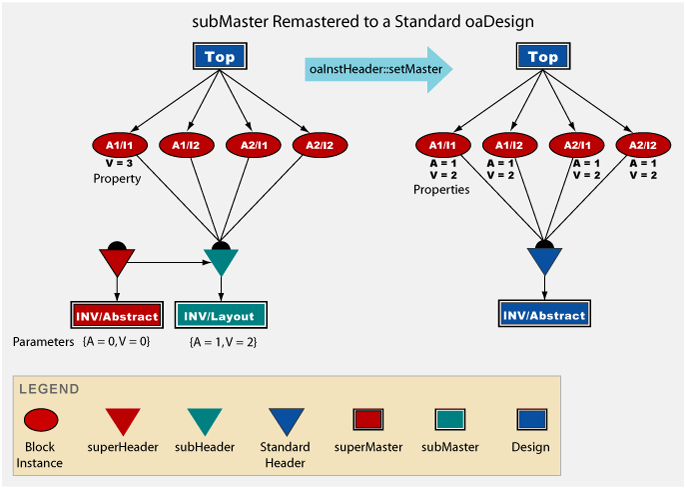
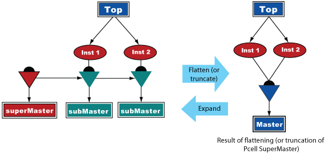

|
 |
 |
||||||
|
|
|
||||||
OpenAccess provides the infrastructure to support parameterized cells (Pcells). A Pcell is a programmable design entity. Designers can specify a set of input values for a Pcell, then instantiate that Pcell like any other design database (oaDesign) in OpenAccess.
This document describes:
Pcells provide many advantages:
A Pcell is an oaDesign that contains the information needed to generate database objects representing components based on a set of parameter values. The process of generating the database object from the oaDesign is called Pcell evaluation.
A Pcell provides defaults for its parameter values. When a designer overrides the default parameter values to create a version of a design, a variant of the Pcell is created.
The following figure shows how a Pcell can affect the layout of a transistor. The gate width, gate height, and the number of gates are the Pcell parameters.
The implementation of Pcells in OpenAccess has a formal parameter definition and is designed to support different programming languages for Pcells.
An application specifies and controls Pcell evaluation through a Pcell evaluator. For example, an application might provide Python Pcells and provide a Python evaluator to create the oaDesign variants of those Pcells. In OpenAccess, a Pcell is called a superMaster and a variant of a Pcell is a subMaster. Both are design databases, and applications can work with subMasters in much the same way that they handle standard design instances.
OpenAccess provides three utility classes to support Pcell evaluators:
The following diagram shows the relationship between IPcell, oaPcellDef, and oaPcellLink.
The IPcell interface class contains a set of functions that OpenAccess requires from a Pcell evaluator in order to use a superMaster. Any application that provides Pcells must derive from the IPcell class, and the derived class is identified as a Pcell evaluator.
IPcell provides functions that
Each Pcell evaluator must be uniquely identified by its name. An application can provide a Pcell evaluator in one of two ways:
An application provides an in-memory Pcell evaluator by creating an instance of its derived IPcell class in its process and registering it with OpenAccess through oaPcellLink class.
To provide a plug-in Pcell evaluator, an application creates an OpenAccess plug-in (with the same name as the Pcell evaluator) to provide its derived IPcell object to OpenAccess. Refer to How to Write a Pcell Evaluator Plug-in for more information.
OpenAccess provides the oaPcellDef base class, which conveys the binding from a superMaster to the code that handles its evaluation. This class also specifies any evaluator-specific data.
A Pcell evaluator provides an object derived from oaPcellDef that specifies itself as the evaluator to be used. A Pcell evaluator typically customizes this derived object to contain evaluator-specific data, which is provided to OpenAccess through the IPcell interface.
This class also provides a data segment that applications can use to store user data. This data segment is an array containing two strings as a name/value pair.
OpenAccess uses the oaPcellLink class to create a global list to manage all the application Pcell evaluators. An application can use the oaPcellLink::create() function to register an in-memory Pcell evaluator before it is needed.
The oaPcellLink object uses the OpenAccess plug-in manager to load and retrieve a plug-in Pcell evaluator and register it when needed.
End users of Pcell evaluators can access the IPcell object and obtain the oaPcellDef needed to create a superMaster through the find() and getPcellDef() functions on oaPcellLink.
Use the following procedure to create a superMaster:
When a superMaster is associated with a Pcell evaluator, OpenAccess creates a binding between a design and an IPcell object by attaching the IPcell object's specific oaPcellDef to the superMaster. The IPcell's onBind() function is called to notify the Pcell evaluator of this binding.
You can convert a superMaster back to a standard design with oaDesign::undefineSuperMaster(). This removes the binding between the design and the IPcell. The IPcell's onUnbind() function is called to notify the Pcell evaluator that the binding was removed.
When the superMaster is saved, the IPcell’s name is stored and the IPcell's onWrite() function is called to store any Pcell evaluator-specific data. When the superMaster is read from disk, it reads the IPcell’s name and requests an oaPcellDef using oaPcellLink::getPcellDef() with this name. This oaPcellDef is bound to the superMaster, and the IPcell's onRead() function is called to read any Pcell evaluator-specific data.
OpenAccess does not throw exceptions for errors resulting from operations with Pcells. Instead, applications should use observer notifications to monitor for errors. Some typical errors that might occur include:
Note: Typically, an empty subMaster is produced when the Pcell evaluator cannot be found or there is a failure during evaluation.
OpenAccess provides two Pcell evaluators as plug-ins:
OpenAccess includes a plug-in Pcell evaluator named oaPcellCPP for C++ Pcells. This evaluator manages the binding and unbinding of superMasters and handles data management.
Applications can provide C++ shared libraries to perform the Pcell evaluation to actually produce the submasters.
Refer to Writing a C++ Pcell Generator for more information about how C++ Pcells are implemented in OpenAccess.
OpenAccess includes a plug-in Pcell evaluator named oaPcellScript for Pcells for scripting languages. This evaluator uses the scripting engine interface (IScriptEngine) for third-party script interpreters that are used to evaluate Pcells.
OpenAccess provides a Tcl engine that can invoke the OpenAccess public API for Tcl based Pcells.
Refer to Implementing Pcells Through Tcl for information about how Tcl Pcells are implemented in OpenAccess.
OpenAccess lets designers instantiate one design (a child instance) into another design (the parent). OpenAccess supports both block and via instances:
Pcells are supported in both types of instances.
Instances in a design are organized according to their masters. A header groups all instances of the same master together.
A superMaster is different than a standard oaDesign because its contents are contained in its subMaster. When an instance of a superMaster is created, it is associated with a set of parameter values—either instance-specific overrides or the defaults from the superMaster. This creates an extra level of complexity because OpenAccess must organize Pcell instances according to their superMasters and manage the parameter overrides associated with those instances.
OpenAccess classifies headers as regular, super, or sub:
Headers are not created explicitly by users but result when instances are created. OpenAccess creates a header and sets up its type according to the master type that it references. When a Pcell instance is created, OpenAccess creates both a superHeader and a subHeader to manage the instance.
When the master of a Pcell instance is needed, OpenAccess automatically creates a transient design database for the subMaster, and the corresponding parameter values for that instance are copied into the subMaster. The onEval() function of the corresponding superMaster’s Pcell evaluator is called for Pcell evaluation in the subMaster.
The following figure shows how instances are organized in a design.
The full parameter list is stored on both the superHeader and subHeader of an instance. Users can create a Pcell instance and explicitly override the default parameter values. Parameter values not specified during instance creation inherit the default values from the superMaster. Changes in the default values of the superMaster's parameters propagate to the instances’ default parameters. OpenAccess determines if a new variant of the Pcell is needed based on whether the parameter values are overrides or use the defaults.
OpenAccess lets applications remaster all the instances of a design with one function call:
static void oaInstHeader::setMaster(oaInstHeader *header
const oaDesign *master,
const oaParamArray *parameters = NULL);
Where:
After a remaster operation, the original oaInstHeader is destroyed and the oaInstHeader for the target oaDesign is used to group the instances. When the source or target master is a Pcell, OpenAccess must perform some conversions between parameters and properties as part of the remaster operation. This section describes the three scenarios for remastering instances that involve Pcells. (For information about remastering all the instances of a standard oaDesign master to a different oaDesign master, refer to the oaInstHeader::setMaster documentation.)
The property/parameter conversions that occur in each scenario are described under Results for that section.
Note: Other operations can trigger the property/parameter conversions covered in these sections. For example, the oaInst::setMaster function follows the same rules for parameter/property conversion as does the oaInstHeader::setMaster function described herein. In addition, redefining an instance master while the design is open or redefining the instance master while the design is closed (out-of-context edit) can trigger the parameter/property conversions.
When oaInstHeader::setMaster is called, observer notifications are sent for each affected instance (as if oaInst::setMaster had been called on each one).
Applications can change all the intances of a standard oaDesign master to a Pcell superMaster. An optional array of parameters can be specified.
The following figure shows the remastering of a standard oaDesign master to a Pcell superMaster when an oaParamArray containing one parameter ( {V = 30} ) is specified. The target Pcell superMaster has a default parameter ( {V = 0} ).
Results
This process is also shown in the following video.
The following figure shows the conversion from a standard oaDesign master to a Pcell superMaster when an array of parameters is not specified.
Results
This process is also shown in the following video.
Applications can change all the intances of a Pcell subMaster to a standard oaDesign master. An oacParamsSuppliedForNonPCellInstMaster error is thrown if you provide an oaParamArray when remastering from a Pcell subMaster to a standard oaDesign.
The following figure shows the conversion from a Pcell subMaster to a standard oaDesign master.

Results
Applications can change the master of all the intances of a Pcell subMaster to a different Pcell superMaster. An optional array of parameters can be specified.
The following figure shows the conversion from a Pcell subMaster to a different Pcell superMaster when an oaParamArray containing one parameter ( {V = 30} ) is specified.
Results
The following figure shows the conversion from a Pcell subMaster to a different Pcell superMaster when an array of parameters is not specified.
Results
A standard design can be converted to a Pcell design, and vice versa. When a standard design is converted to a Pcell design, it is known as expanding. Conversely, when a Pcell design is converted to a standard design, it is known as flattening.
OpenAccess provides the following functions for expanding or flattening designs, respectively:
OpenAccess automatically adjusts the headers in a parent design when it detects that a child design is being expanded or flattened.
A Pcell master can also be truncated, which means that the Pcell master was opened in write mode. When a Pcell master is truncated, flattening also occurs.

When a Pcell is flattened, OpenAccess does the following:
When a standard design is expanded, OpenAccess does the following:
When you open or reopen a Pcell superMaster in write mode, it is known as truncating the superMaster. When a Pcell superMaster is truncated, OpenAccess does the following:
Return to Programmers Guide topics

Copyright © 2001-2010 Cadence Design Systems, Inc.
All rights reserved.